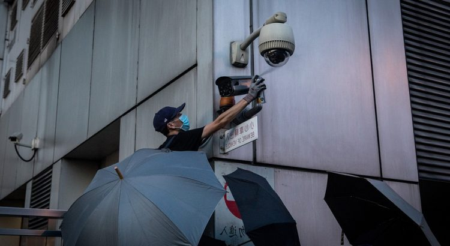

US Blacklists 33 Chinese Entities for Aiding Surveillance
The US Commerce Department has blacklisted a slew of Chinese companies, learning institutions, and organizations.The latest development is tied to rising cases of human rights violations in the country, especially against ethnic minority groups in the Xinjiang Uighur Autonomous Region.

There have been reports of mass surveillance, abductions, coercion, and forced labor.Some Uighurs residing in the United States have reported incidences where loved ones who vanished several years have suddenly reappeared on social media criticizing their activism against the Chinese leadership.They, however, seem to be under coercion, which makes the situation deeply alarming.Their whereabouts are also largely unknown.
Such moves have prompted many Uighurs living abroad to attack the Chinese government for its attempts to silence critics.Many of those who have suddenly reappeared on social media seem to be supporting the totalitarian regime.Some reports indicate that the Chinese government has been sending anti-establishment crusaders to 'transformational education centers' for 'vocational training.'The centers are run by the government.
Activists in the diaspora fear that their actions may lead to the suffering of those in captivity.According to Samira Imin, an Uighur who resides in Boston, she recently received a message on Twitter from her father, Iminjan Seydin.He went missing a few years ago after being handed a 15-year jail sentence for promoting 'radical ideologies.'
According to the health worker, he chided her for attacking the government.He also asserted that she had been brainwashed by anti-China forces.
'In our first online conversation on WeChat, after (nearly) three years, he is demanding me to delete my posts in the past and not publish anything on social media apps such as Twitter,' Imin said.'The Chinese government’s attempt to control my actions and thoughts through my father is not acceptable,' she told VOA News.
Chinese companies in the US that are currently blacklisted for aiding the authorities in mass surveillance efforts include SenseNets, CloudWalk Technology, FiberHome Technologies Group, NetPosa, IS’Vision, Intellifusion, and Nanjing FiberHome Starrysky Communication Development.The following is the statement issued by the Commerce Department in relation to this:
'These nine parties are complicit in human rights violations and abuses committed in China’s campaign of repression, mass arbitrary detention, forced labor and high-technology surveillance against Uighurs, ethnic Kazakhs, and other members of Muslim minority groups in the Xinjiang Uighur Autonomous Region.'
The China, Hong Kong Tussle Continues
China has been projecting its authority over autonomous regions in recent months.Hong Kong, in particular, has had to endure upheavals caused by unfavorable statutes passed by Beijing.China recently enacted a law allowing it to bypass local Hong Kong laws.
The latest development has rattled many Hong Kong citizens and triggered a mass exodus to Taiwan, which has so far managed to ward off the mighty state.This is mostly due to support from Washington.The US government has already approved a $2 billion arms sale to Taiwan to boost its military capacity.
There has been a 150 percent increase in the number of immigrants relocating from Hong Kong to Taiwan this year compared to last year.
[bsa_pro_ad_space id=4]
Share on Facebook Tweet Follow us
Posted On: 2020-05-27T00:00:00
Posted By: Samuel Gush




Content Date: 2020-05-27
Download Date: 2021-07-09
Document ID: L0C04EPFF